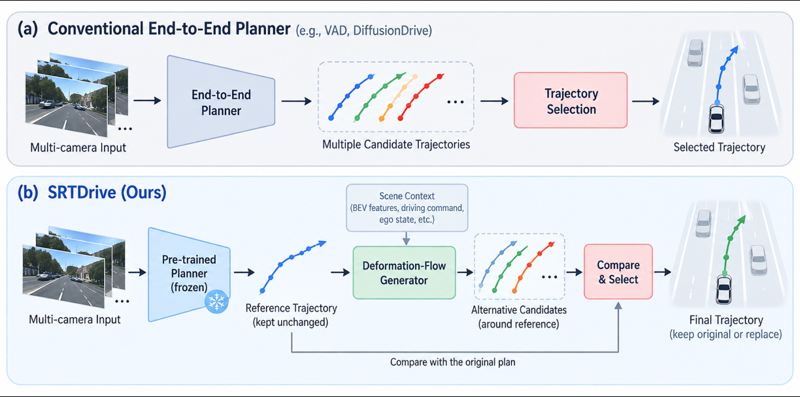
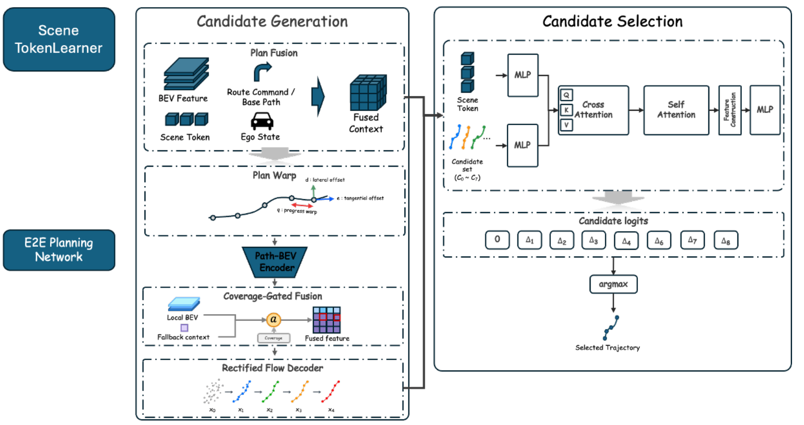

Frozen base planner
Reuse the pretrained planner and keep its trajectory unchanged as the reference candidate.
Anonymous ICLR 2027 submission
Keep the original plan. Generate alternatives around it. Select by what each alternative changes relative to the reference.
01 · Overview
End-to-end driving planners may still output a trajectory with collision risk, even when a small change could help. Independently scoring candidate trajectories does not tell a planner what a replacement improves—or what it worsens—relative to its original plan.
SRTDrive is a post-hoc refinement framework that freezes the base planner and keeps its output unchanged as a reference candidate. A deformation-flow generator proposes progress and normal–tangential adjustments around that reference. A set-contextual selector scores each candidate relative to the original using candidate–reference representations and geometric relations.
Collision-prioritized lexicographic supervision first favors candidates that do not worsen collision relative to the reference across horizons, then considers trajectory error within that set. The current manuscript reports open-loop results on nuScenes; its closed-loop Bench2Drive results are not yet complete.
02 · Core idea
The original output is not discarded or treated as an implicit safe fallback. It remains an explicit candidate in the final choice.

The frozen planner's output stays in the candidate set. Alternatives are generated around it, and a single selector decides whether to retain or replace it. View full size ↗
Reuse the pretrained planner and keep its trajectory unchanged as the reference candidate.
Model progress and normal–tangential deformations around the original trajectory.
Use candidate–reference differences to decide between keeping and replacing the original.
03 · Method
Candidate generation and selection are separate, but both are anchored to the frozen planner's reference trajectory.

Scene and path-local BEV context condition a deformation-flow generator. The selector contextualizes all candidates, including the original, before choosing one trajectory. View full size ↗
BEV features are sampled around the reference path and combined with scene tokens, driving command, and ego state.
Training ranks collision non-worsening across horizons before trajectory error; this is a training priority, not an inference-time safety guarantee.
04 · Manuscript evidence
The current draft reports paired base-versus-SRTDrive values for seven frozen planners. Comparisons are valid within a planner, not across planners with different protocols.
Applying SRTDrive to VAD changes the reported mean L2 error and collision rate without retraining the base planner.
| Frozen planner | L2 (m) ↓Base → +SRT | Collision (%) ↓Base → +SRT |
|---|---|---|
| VAD | 0.72 → 0.68 | 0.17 → 0.13 |
| UniAD | 1.09 → 1.08 | 0.28 → 0.28 |
| GenAD | 0.54 → 0.54 | 0.18 → 0.17 |
| DMAD | 0.62 → 0.61 | 0.15 → 0.16 |
| IR-WM | 0.90 → 0.89 | 0.64 → 0.64 |
| SparseDrive | 0.61 → 0.61 | 0.10 → 0.11 |
| DiffusionDrive | 0.57 → 0.57 | 0.08 → 0.08 |
The displayed precision masks some small changes; it must not be read as proof of exact equality. Results are mixed: some planners improve, while DMAD and SparseDrive show higher reported collision rates after refinement.
05 · Status & scope
This page is intentionally narrower than a finished results release.
06 · Citation
Author and affiliation information is intentionally omitted during double-blind review.
@misc{anonymous_srtdrive_2027,
title = {SRTDrive: Safety-Aware Trajectory Refinement via Reference-Anchored Advantage Learning},
author = {Anonymous},
note = {Under review at ICLR 2027}
}